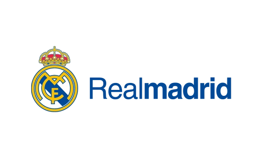
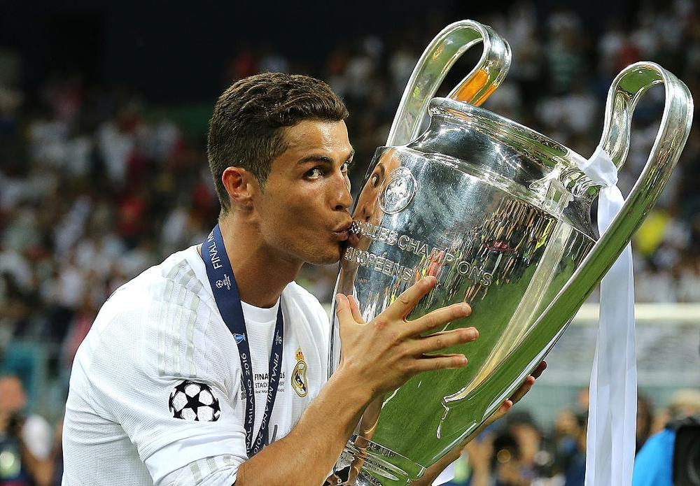
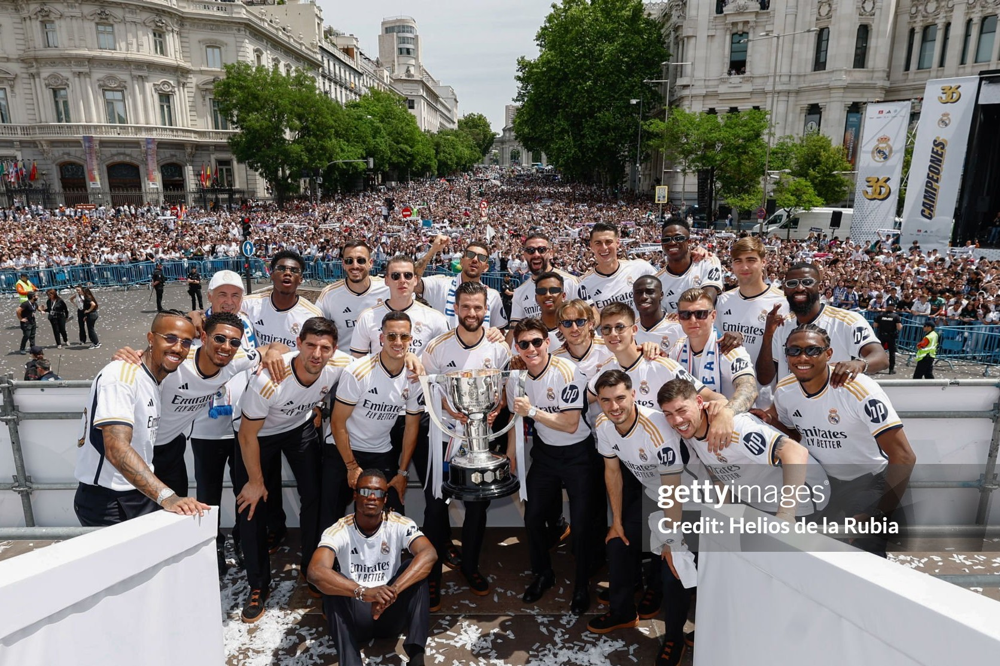
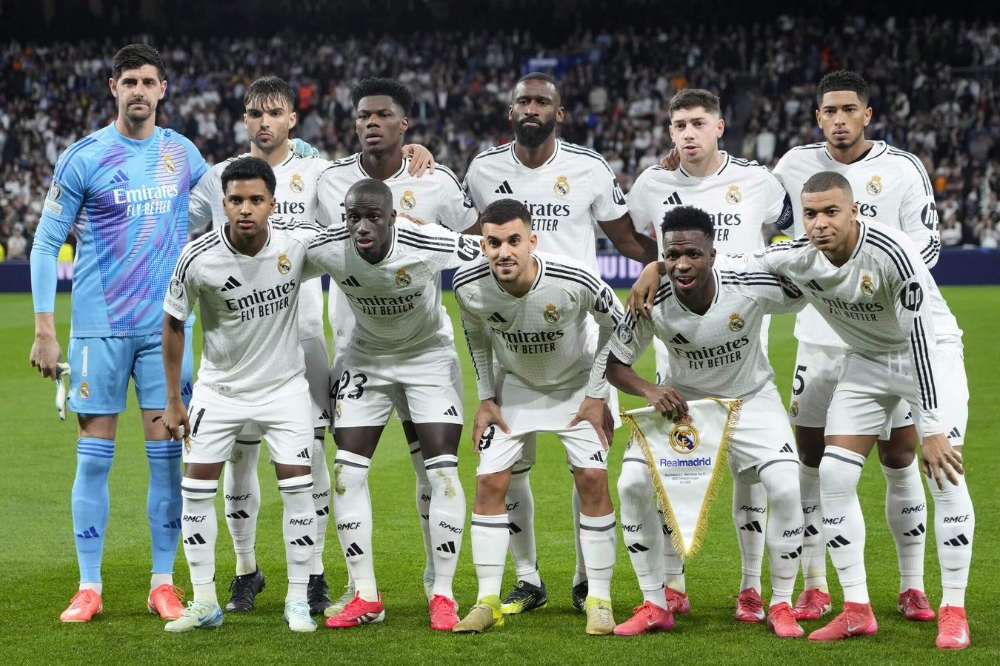

Real Madrid – Présentation générale:
Real Madrid Club de Fútbolest bien plus qu’un simple club de football, c’est une véritable institution mondiale fondée en 1902 à Madrid. Depuis plus d’un siècle, il incarne l’excellence, la discipline et l’ambition de toujours être au sommet. Son histoire est marquée par des générations de joueurs exceptionnels et des succès constants, ce qui lui permet d’être considéré comme le plus grand club de tous les temps. Avec une identité forte et une exigence unique, le Real Madrid ne vise jamais moins que la victoire, que ce soit en Espagne ou sur la scène internationale.

Cristiano Ronaldo (CR7)
Cristiano Ronaldo rejoint le Real Madrid Club de Fútbol en 2009 en provenance de Manchester United pour un transfert record à l’époque. Dès son arrivée, il s’impose comme le leader offensif de l’équipe grâce à sa vitesse, sa puissance et son efficacité devant le but. Saison après saison, il améliore ses statistiques et devient rapidement le meilleur buteur de l’histoire du club, avec plus de 450 buts en seulement 9 saisons, un chiffre exceptionnel.Au fil des années, Cristiano Ronaldo devient le symbole de la domination européenne du Real Madrid Club de Fútbol, notamment en UEFA Champions League. Il joue un rôle décisif dans plusieurs campagnes victorieuses, marquant dans les matchs les plus importants et portant l’équipe dans les moments difficiles. Sa capacité à performer sous pression, surtout en Ligue des Champions, renforce son statut de joueur clutch et de légende du club.Son passage au Real Madrid est également marqué par de nombreuses récompenses individuelles, dont plusieurs Ballons d’Or, et par une rivalité historique avec Lionel Messi lors des matchs contre FC Barcelona. Cette période est considérée comme l’une des plus grandes de l’histoire du football, où Ronaldo pousse le club à atteindre un niveau encore plus élevé.En 2018, Cristiano Ronaldo quitte le Real Madrid Club de Fútbol après avoir tout gagné, laissant derrière lui un héritage immense. Il reste aujourd’hui une icône du club, respectée par les supporters et considérée comme l’un des principaux acteurs qui ont fait du Real Madrid le meilleur club du monde.

RMA & UEFA Champions League 🏆
Real Madrid Club de Fútbol est le club le plus titré de l’histoire de la UEFA Champions League avec **15 titres officiels** selon les données historiques de l’UEFA et de la FIFA. Ces trophées couvrent plusieurs époques : la domination des années 1950, la période des “Galactiques”, puis l’ère moderne avec des victoires récentes en 2014, 2016, 2017, 2018, 2022 et 2024. Le club est connu pour sa capacité à gagner les matchs décisifs et à réaliser des “remontadas” historiques, ce qui fait de lui le véritable “roi de l’Europe”.

RMA & Impact sur le football espagnol
Real Madrid Club de Fútbol a énormément influencé le football espagnol en dominant la La Liga avec 36 titres de champion. Son succès a élevé le niveau du championnat, attiré les meilleurs joueurs du monde et renforcé la réputation de l’Espagne comme l’un des pays les plus forts du football mondial. La rivalité avec d’autres clubs comme le FC Barcelone a aussi rendu la ligue plus compétitive et suivie dans le monde entier.

Santiago Bernabéu 🏟️
Santiago Bernabéu Stadium est le stade mythique du Real Madrid Club de Fútbol, inauguré en 1947 et capable d’accueillir plus de 80,000 supporters. Il est considéré comme une forteresse, surtout lors des soirées de Ligue des Champions où l’ambiance pousse l’équipe à se surpasser. Récemment modernisé, il est devenu un stade ultra-moderne tout en gardant son histoire et son prestige, symbolisant parfaitement la grandeur du club.
